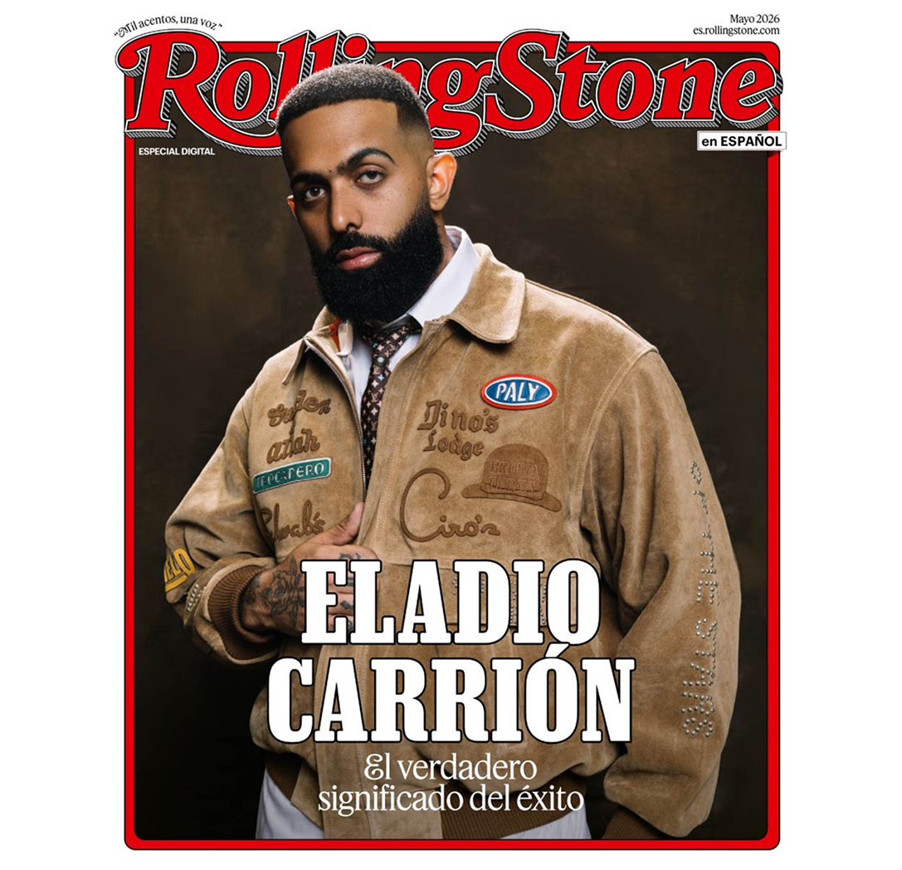

Éxito. Una palabra tan poderosa como contradictoria. En la industria del entretenimiento, su significado ha sido moldeado una y otra vez por artistas que creen haber conquistado la cima: fama, fortuna, cadenas brillantes, reconocimiento mundial y una vida rodeada de lujos que, muchas veces, terminan alejándolos de lo verdaderamente esencial. Sin embargo, entre tanto ruido y superficialidad, todavía existen figuras capaces de mirar más allá de lo material y encontrar el verdadero valor de la vida en los instantes más humanos, íntimos y trascendentes de su existencia. Y cuando eso sucede, su arte deja de ser solo música: se convierte en verdad, en emotion pura, en algo genuinamente invaluable, una rareza maravillosa. Entre esos nombres destaca, sin duda, el gran Eladio Carrión.
El trapero puertorriqueño ha encontrado el éxito en aquello que muchos olvidan mientras persiguen aplausos: la cotidianidad, los afectos y las pequeñas maravillas que comparte con quienes lo rodean.

Su visión no gira únicamente en torno a sí mismo, sino también hacia su familia, sus amigos y cada persona que forma parte de su camino y de su equipo de trabajo. En un mundo donde el ego suele consumir a las grandes estrellas, Eladio Carrión parece haber alcanzado una de las cimas más difíciles y admirables que un artista puede conquistar en vida: la humildad y la sencillez.
En el panorama actual de la música urbana, Eladio señala que la escena se ha vuelto en ocasiones algo tóxica, influida tanto por ciertas dinámicas de la industria como por algunos fanáticos que generan controversias en torno a situaciones que escapan al control de los artistas. Aunque no suele estar pendiente de este tipo de noticias, el cantante reconoce que, entre lo positivo y lo negativo, no cambiaría nada. Para él, ese equilibrio entre aciertos y errores ha sido precisamente lo que ha permitido que la música evolucione y llegue a ser como la conocemos hoy. "En el género hay muchas cosas malas: mucho egoísmo y pisoteo, pero eso lo vemos en todas las industrias y en la vida en general."
Virtudes extrañas, casi extintas, dentro de una industria acostumbrada a medir el valor humano en números, lujos y apariencias. "El éxito es diferente para todo el mundo. Todo depende de cada uno. Ya sean cosas pequeñas o muy grandes. Hay personas que sienten el éxito cuando lo tienen todo, y hay otras que lo ven cuando están en salud", reflexiona. Uno podría pensar que, por el peso de su nombre en el trap y por esa voz que impone desde el primer verso, avanza a toda velocidad, sin mirar atrás y sin detenerse a pensar a quién podría dejar herido en el camino. Pero Eladio está muy lejos de ser eso. La humildad y la vulnerabilidad sostienen gran parte de lo que es como persona y como artista, porque —como él mismo ha dicho— un artista no es un superhéroe; sigue siendo, ante todo, un ser humano.